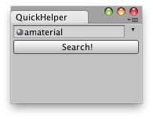

Help.HasHelpForObject
Description 描述
Is there a help page for this object?
See Also: Help.ShowHelpForObject, Help.GetHelpURLForObject.

Editor Window that lets you load docs for any Selected GameObject.
using UnityEngine; using UnityEditor;
// EditorScript that quickly searchs for a help page // of the selected Object. // // If there is no page found on the Manual it opens the Unity forum.
class QuickHelper : EditorWindow { Object source;
[@MenuItem("Example/QuickHelper _h")] static void Init() { EditorWindow window = EditorWindow.GetWindowWithRect(typeof(QuickHelper), new Rect(0, 0, 165, 100)); window.Show(); }
void OnGUI() { EditorGUILayout.BeginHorizontal(); source = EditorGUILayout.ObjectField(source, typeof(Object)); EditorGUILayout.EndHorizontal();
if (GUILayout.Button("Search!")) { if (source == null) { this.ShowNotification(new GUIContent("No object selected for searching")); } else { if (Help.HasHelpForObject(source)) { Help.ShowHelpForObject(source); } else { Help.BrowseURL("http://forum.unity3d.com/search.php"); } } } } }